Complete Research Report
Frontend Design • Backend Infrastructure • Implementation Roadmap
Confidential — Internal Use OnlyTable of Contents
- Glassmorphism 2.0 and Spotlight Cards
- Footer Architecture and Modals
- 4. Motion Graphics & Animation
- 5. 3D & Spatial Web
- 6. Anti-AI-Slop Design — Authenticity Signals
- 7. AI-Forward Interactive Features
- 8. Performance & Technical Excellence
- 9. Copywriting & Content Architecture
- 10. Competitive Landscape & Inspiration
- 6. Database Optimization
- 7. DevOps & Deployment
- 8. Security & Compliance
- 9. Testing Strategy
- 10. Scalability & Architecture Patterns
- 7. Component Inventory
- 8. Performance Budget
- 9. SEO & Marketing Technical Requirements
- 10. Launch Checklist
# Velyon AI Business Consulting — Complete Research Report
Frontend • Backend • Implementation Roadmap
Generated via Google Deep Research — June 20, 2026 ~94,000 characters • 160+ cited sources • 30 sections
PART A — Frontend Design & Architecture
Glassmorphism 2.0 and Spotlight Cards
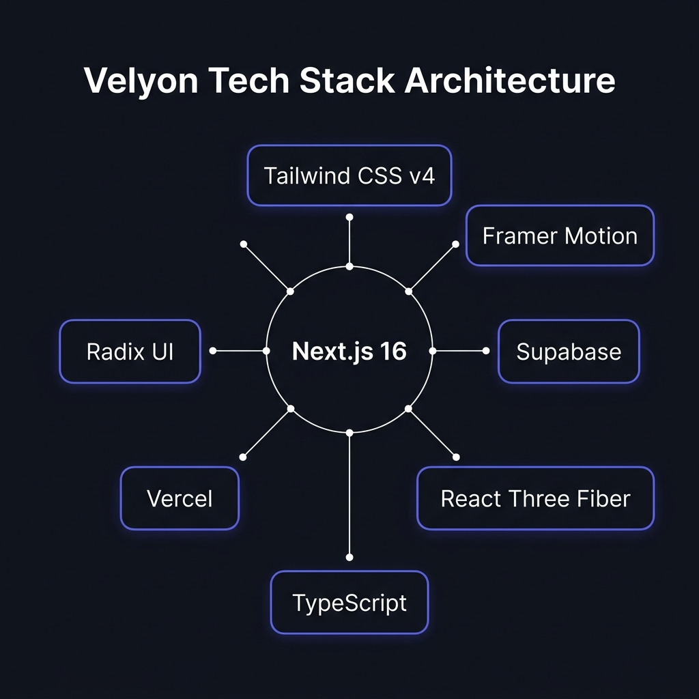
Figure 1: Velyon full-stack technology architecture — Next.js 16 at the core with Tailwind v4, Framer Motion, Supabase, R3F, and TypeScript.
Rather than relying on heavy, opaque blurs that severely impact rendering performance, Glassmorphism in 2026 utilizes Tailwind v4's streamlined syntax and multi-layered backdrop filters. The modern aesthetic combines backdrop-blur-xl with exceptionally thin, semi-transparent inner borders (border-white/10) and subtle color-mix() background tints [cite: 29, 30]. This simulates the physical edges of frosted glass catching ambient light. Velyon will pair this with CSS-driven spotlight effects, where a radial gradient tracks the user's cursor position across the card boundary, creating an illusion of volumetric lighting.
Footer Architecture and Modals
The footer architecture serves as the ultimate secondary navigation and SEO anchor. It will be structured as a "Mega-Footer," utilizing a strict grid to expose all service pillars, industry-specific use cases, and legal compliance documentation (GDPR, SOC2).
Modal and drawer patterns will exclusively utilize the Next.js intercepting routes detailed in Section 2, ensuring every modal possesses a unique, shareable URL. Toast and notification systems will be positioned at the bottom-right of the viewport, utilizing Framer Motion's AnimatePresence for smooth exit animations, ensuring they remain entirely non-intrusive and automatically dismiss after a brief duration.
4. Motion Graphics & Animation
The most profound paradigm shift in 2026 web animation is the aggressive offloading of JavaScript-heavy animation libraries in favor of native browser APIs. Velyon’s motion strategy requires strict, disciplined orchestration to differentiate between page transitions, scroll-linked animations, and complex timeline choreography.
Next.js 16 View Transitions API
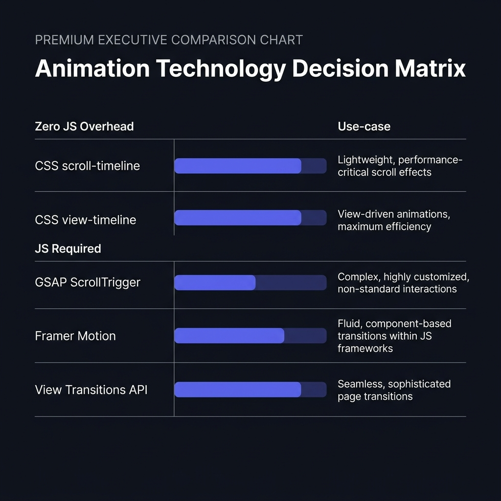
Figure 2: Animation technology decision matrix — CSS-native solutions eliminate JS overhead for 80% of scroll-linked use cases.
Next.js 16 integrates React 19's View Transition API natively, fundamentally replacing tools like Framer Motion for cross-route page transitions [cite: 8, 31]. By utilizing the <ViewTransition> component, the browser natively captures screenshots of the old and new DOM states, animating the morph between them on the compositor thread for buttery-smooth 60 frames-per-second performance with zero JavaScript bundle overhead [cite: 8, 32].
To implement this, Velyon will set the experimental: { viewTransition: true } flag in next.config.ts [cite: 33]. When a user clicks a case study thumbnail on the Velyon homepage, the thumbnail physically morphs and expands into the hero image of the subsequent detail page. This is achieved by assigning identical view-transition-name CSS properties to both the outgoing thumbnail and the incoming hero image [cite: 32].
Native CSS Scroll-Driven Animations vs. GSAP
For years, GSAP's ScrollTrigger was the undisputed industry standard for scroll-linked animation. In 2026, the native CSS Scroll-Driven Animations API dictates an entirely new decision matrix. This native API synchronizes animation progress directly with scroll position entirely in CSS, bypassing the main JavaScript thread completely [cite: 7, 23].
| Animation Requirement | Selected Technology | Technical Justification |
|---|---|---|
| Reading Progress Bars | CSS scroll-timeline |
Achieved with animation-timeline: scroll(root block). Zero JS overhead, perfectly smooth [cite: 6]. |
| Section Fade-Ins & Reveals | CSS view-timeline |
Utilizes animation-timeline: view() and animation-range: entry. Eliminates the need for IntersectionObserver [cite: 6, 34]. |
| Parallax Background Drifts | CSS scroll-timeline |
Maps vertical scroll offsets to transform: translateY entirely on the compositor thread [cite: 23, 34]. |
| Multi-Step Timeline Sequences | GSAP ScrollTrigger |
Required when pinning a section while executing 5+ discrete, sequential animations that CSS cannot easily orchestrate [cite: 35, 36]. |
| Kinetic Text Morphing | GSAP SplitText |
Essential for character and word-level typographical manipulations and SVG path morphing [cite: 36]. |
Micro-Interactions and Typography
Micro-interactions on the Velyon site will focus on tactile feedback. Button hovers will eschew simple color changes in favor of magnetic pull effects and subtle scaling, categorized into a strict taxonomy of primary, secondary, and tertiary interaction states.
Kinetic typography will serve as a primary visual hook. Utilizing variable fonts, the weight and slant axes of the typography will interpolate dynamically based on user scroll velocity. Marquee and ticker patterns, which can easily become annoying if overused, will be relegated strictly to displaying client logos or rapid-fire data points, moving at a slow, deliberate pace that pauses cleanly on user hover.
5. 3D & Spatial Web
The integration of 3D computational elements distinguishes standard B2B templates from genuinely premium, future-facing consultancies. Velyon will bypass simple interactive 3D objects in favor of dynamic, data-driven simulations that visually communicate the concept of "organizing chaos"—a direct metaphor for the agency's AI optimization services.
React Three Fiber (R3F), WebGPU, and TSL
The confidence level for WebGPU adoption in 2026 production environments is Medium to High. While Safari support may require fallbacks, WebGPU compute shaders combined with the Three Shading Language (TSL) enable massive particle simulations previously impossible in browser environments [cite: 9, 10, 11].
Velyon will build a Chaotic Flow Field particle system running in the homepage hero section using R3F. This approach utilizes GPGPU (General-Purpose computing on Graphics Processing Units) ping-pong buffers to calculate velocity and position directly on the GPU, allowing the smooth animation of over 16,000 particles simultaneously at 60 FPS [cite: 10]. By using useFrame for all mutations and updating references directly rather than triggering React state changes, the application completely bypasses the React reconciliation cycle for render-loop updates [cite: 37].
Spline vs. Custom R3F Decision Matrix
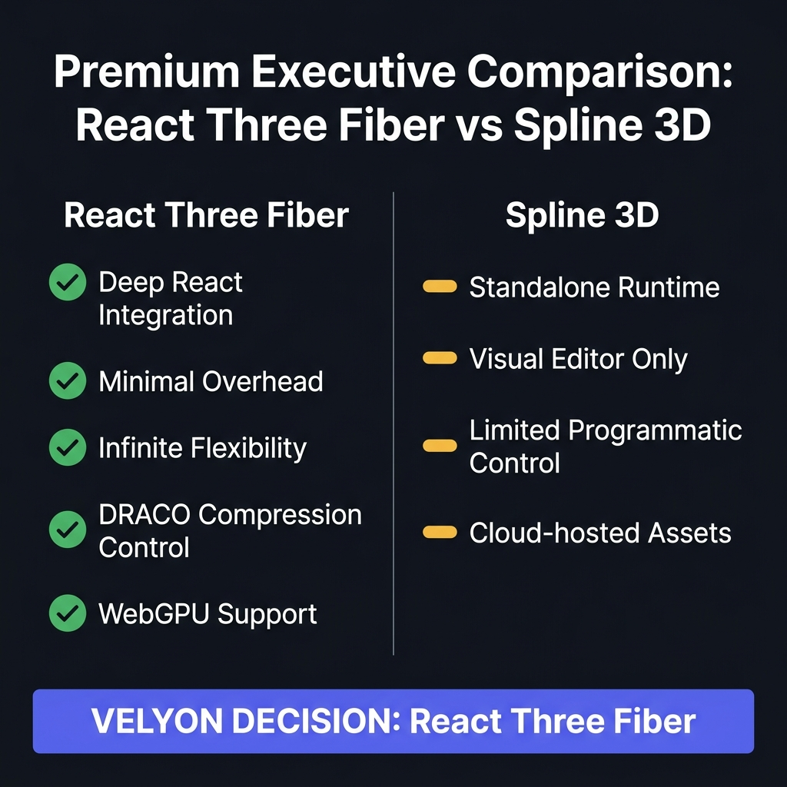
Figure 3: React Three Fiber vs Spline 3D — R3F selected for deep React integration, minimal overhead, and WebGPU support.
While Spline is excellent for rapid prototyping and generating no-code 3D embeddables, a world-class production application like the Velyon Command Center must rely on custom React Three Fiber implementations.
| Feature Comparison | Spline 3D | React Three Fiber (Custom) | Velyon Decision |
|---|---|---|---|
| Integration Depth | Exports standalone web components via spline-viewer or iframes [cite: 38]. |
Natively inherits React's component model, hooks, and state management [cite: 39]. | R3F. Deep integration is required for UI state binding. |
| Performance Overhead | Introduces a heavy standalone runtime payload [cite: 38]. | Minimal overhead on top of Three.js and React core libraries [cite: 38]. | R3F. Performance and Lighthouse scores are paramount. |
| Logic & Interactivity | Visual node-based logic; limited complex programmatic interaction [cite: 40]. | Infinite programmatic flexibility; seamless Framer Motion 3D integration [cite: 39]. | R3F. Particles must react to complex scroll and mouse vectors. |
| Asset Pipeline | Cloud-hosted assets; less control over granular compression. | Total control over DRACO compression, instancing, and LOD [cite: 38, 39]. | R3F. Strict payload optimization required. |
To maintain absolute performance, Velyon will enforce DRACO compression on all GLTF models, reducing total scene payloads significantly. Instanced meshes (<Instances>) will be utilized whenever repeated geometry is necessary, allowing thousands of similar objects to render in a single draw call [cite: 37, 41, 42]. The agency recognizes that 3D helps when it communicates depth and technical prowess, but hurts when it causes layout thrashing, battery drain, or visual distraction from core conversion copywriting.
6. Anti-AI-Slop Design — Authenticity Signals
By 2026, generative AI tools have saturated the internet with photorealistic, mathematically perfect, yet emotionally hollow imagery. As an elite AI consulting agency, Velyon's website must paradoxically distance itself from this "Midjourney-default" aesthetic to signal genuine human strategic value and bespoke engineering [cite: 3, 4, 43].
The Post-Midjourney Aesthetic
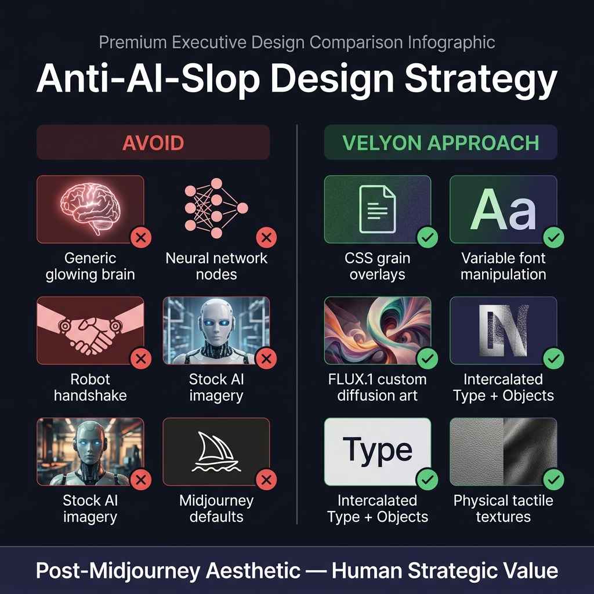
Figure 5: Anti-AI-Slop design strategy — differentiating through authenticity, grain textures, and editorial typography.
The 2026 premium visual language relies heavily on a movement termed "Intercalated Type + Objects" and a refined, sophisticated version of "Neo-Aero." This aesthetic actively resists the sterile, mechanical framing of early AI [cite: 3].
The Velyon UI must feel inherently physical and assembled. We will achieve this tactility using CSS-based grain and noise overlays (filter: url(#noise)) layered softly over organic gradients, bringing a sense of photographic film grain to the digital canvas [cite: 3]. High-contrast Variable Fonts take precedence over imagery, with typography functioning as the primary structural and artistic element [cite: 3, 44].
When custom conceptual art is required, Velyon will aggressively avoid the generic "glowing blue brain," "neural network nodes," or "robot shaking human hand" tropes. Instead, the agency will utilize local, open-source diffusion models (such as FLUX.1) manipulated via ComfyUI to generate abstract, architectural, and deeply stylized editorial art that competitors cannot replicate via standard commercial prompting [cite: 4, 45].
Color Palette Architecture
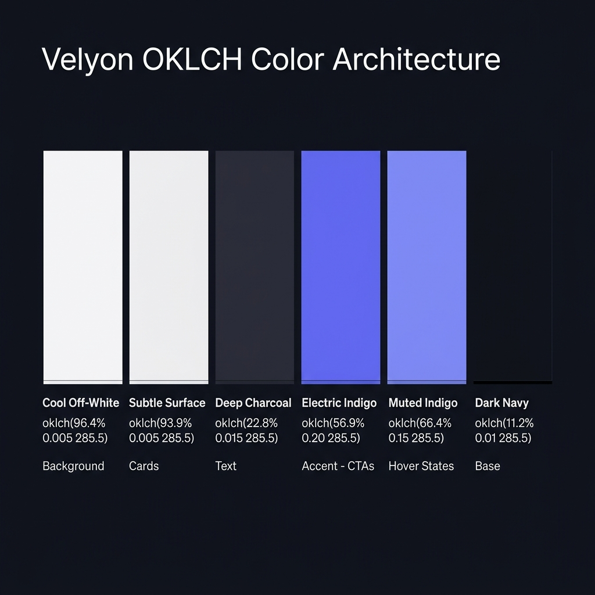
Figure 4: Velyon OKLCH color architecture — perceptually uniform token-based palette via Tailwind CSS v4.
Velyon’s strict color architecture utilizes the oklch color space natively supported by Tailwind v4. The oklch model provides a significantly wider color gamut and highly predictable, perceptually uniform color mixing compared to legacy RGB or HSL formats [cite: 46].
The base palette relies on subdued, muted neutrals to drastically reduce cognitive load and exude corporate luxury [cite: 27].
* --color-velyon-bg: oklch(0.98 0.01 250) — A crisp, cool off-white for expansive breathing room.
* --color-velyon-surface: oklch(0.95 0.02 250) — Subtle contrast for Bento Grid cards.
* --color-velyon-text: oklch(0.20 0.05 250) — Deep, authoritative charcoal ensuring maximum readability.
Accents are highly intentional, utilizing saturated focal points applied exclusively to conversion elements or critical data highlights.
* --color-velyon-accent: oklch(0.65 0.20 280) — A vibrant, electric indigo that commands immediate visual attention, ensuring that when everything else is muted, the path to conversion is unmistakable [cite: 44, 47].
7. AI-Forward Interactive Features
A premium B2B consulting site does not merely describe its services through static paragraphs; it demonstrates its capability interactively. In 2026, enterprise buyers expect to experience a microcosm of the agency's value proposition directly in the browser.
Embedded AI Audit Demos and ROI Calculators
The highest-converting interactive tool for a consulting agency in 2026 is the transparent ROI calculator. B2B buyers demand quantifiable, directional proof before committing to a sales dialogue [cite: 14, 48]. Velyon will feature a highly dynamic ROI Calculator built utilizing React state and Framer Motion, mirroring the exact methodology used in the first phase of the agency's consulting engagements [cite: 12].
The UI will feature a sleek, split-pane layout. The left pane will contain minimalist sliders and numeric inputs allowing the prospect to define their current operational reality: "Monthly Leads," "Average Deal Value," and "Weekly Admin Hours." The right pane functions as a real-time results dashboard. As the user adjusts the inputs, Supabase Edge Functions execute proprietary benchmarking calculations, instantly updating the massive "Projected Annual Savings" and "Revenue Uplift" hero metrics on the right [cite: 14, 48]. This data binding transforms a complex business case into a visceral, immediate visual reward.
Premium Conversational UX
If a conversational agent is deployed, it must categorically bypass the standard, annoying "bottom-right chat widget" UI that plagues generic websites. Velyon's conversational interface will function as a full-screen, system-level "Agent Dashboard."
Powered by advanced LLM integration (e.g., Anthropic Claude via the Vercel AI SDK), this interface will utilize progressive disclosure, ensuring the user is never overwhelmed by text. The AI will explicitly cite its reasoning, linking directly to Velyon's internal case studies and technical documentation to build immediate trust [cite: 49]. Crucially, the system will feature a seamless refinement loop and an elegant escalation path, allowing the user to seamlessly transition from chatting with the AI to booking a calendar appointment with a senior human consultant when the architectural queries become too complex [cite: 49, 50].
8. Performance & Technical Excellence
A premium enterprise site must load instantaneously and execute flawlessly. Velyon’s technical foundation rests on the absolute bleeding edge of the Next.js ecosystem and rigorous adherence to global web standards.
Next.js 16 Optimization Pipeline
Next.js 16 completely redesigns caching and rendering. The framework stabilizes Turbopack, making it the default bundler and delivering massive reductions in build times [cite: 2, 20].
Furthermore, Next.js 16 deprecates the unpredictable, implicit caching models of earlier App Router versions. Velyon will utilize the explicit "use cache" directive. By declaring 'use cache'; at the top of an asynchronous component or function, the compiler automatically generates cache keys for database queries (such as fetching client case studies from Supabase). This ensures that while the core layout enjoys the rapid TTFB (Time to First Byte) of static generation, the application retains the ability to execute dynamic, personalized logic on demand without complex manual invalidation logic [cite: 2, 20, 51].
Network boundary control is managed via proxy.ts, which entirely replaces the deprecated middleware.ts. This file will execute on the edge to handle secure routing, A/B testing splits, and authentication validation before the request ever hits the core Node server, ensuring maximum efficiency [cite: 2, 19].
Image and Font Pipelines
To guarantee perfect Lighthouse scores across Core Web Vitals (LCP, INP, CLS):
* Images: All raster assets will be piped through Next.js next/image to generate AVIF formats and dynamic srcset sizes automatically. Crucially, dynamically generated blurDataURL placeholders will be implemented for every image to completely eliminate Cumulative Layout Shift (CLS) during load sequences [cite: 19].
* Fonts: Variable fonts will be deeply subsetted (stripping out unused glyphs) and loaded utilizing font-display: swap to ensure that text content is immediately perceivable to the user while the custom typography downloads in the background.
Accessibility: WCAG 2.2 AA Baseline
The legal and ethical reality of web accessibility in 2026 mandates strict adherence to the POUR principles. While WCAG 3.0 introduces fascinating concepts like flexible scoring and the APCA contrast method, it remains a Working Draft. Therefore, WCAG 2.2 AA is the definitive, legally enforceable target for Velyon [cite: 15, 16].
| WCAG 2.2 Core Principle | Velyon Frontend Implementation |
|---|---|
| Perceivable | oklch palette rigorously validated to ensure all text-to-background contrast ratios strictly exceed the 4.5:1 threshold. Comprehensive alt text generation for all imagery [cite: 16]. |
| Operable | 100% keyboard navigability. Complex components like Bento Grid expansions, Cmd+K palettes, and 3D canvases must trap focus correctly and respond to standard keystrokes [cite: 16]. |
| Understandable | Forms feature explicit error states, persistent labels, and clear programmatic instructions [cite: 16]. |
| Robust | Semantic HTML5 structure ensuring perfect compatibility with 2026 screen readers and assistive AI technologies [cite: 16, 52]. |
9. Copywriting & Content Architecture
The narrative architecture is as critical to conversion as the DOM architecture. In 2026, B2B buyers arrive on the site having already been broadly educated by conversational LLMs; they seek specific, proprietary methodologies and verifiable proof, not generic marketing fluff [cite: 53, 54].
Hero Copy and B2B Formulas
Velyon will aggressively utilize the PAS (Problem-Agitate-Solution) framework for overarching page narratives [cite: 55]. * Problem: The enterprise client is bleeding operational margin due to disjointed, legacy workflows. * Agitate: This technical debt is compounding rapidly while competitors implement automation at scale. * Solution: Velyon's deterministic, fixed-fee AI integration architecture.
For micro-copy, UI labels, and button texts, the 4Cs (Clear, Concise, Compelling, Credible) framework will dictate tone. Language must be brutally efficient, prioritizing clarity over cleverness [cite: 55].
Case Study Structure That Converts
Social proof has evolved beyond the standard "Testimonial" block featuring a headshot and a generic quote. Enterprise buyers require rigid data. Velyon's case studies will follow a strict structural narrative: 1. Stage 1: The Audit: Identifying the exact manual bottlenecks and scoping the automation opportunity. 2. Stage 2: The Prototype: Detailing the specific LLMs, databases, and pipelines deployed to solve the problem. 3. Stage 3: The Embed & Impact: The measurable result of the engagement [cite: 12].
The outcomes will be formatted as massive, isolated metric cards: "Reduced Customer Churn by 40%," "75% Reduction in Manual Admin Hours," and "Payback Period: 4.2 Months." This data-first approach serves as the ultimate trust signal for B2B procurement [cite: 48, 53, 56].
10. Competitive Landscape & Inspiration
To define "world-class" in 2026, Velyon must benchmark against the absolute vanguards of digital design, analyzing the trends awarded by institutions like Awwwards and the CSS Design Awards [cite: 57, 58, 59].
Top-tier agencies such as Locomotive, Immersive Garden, Resn, and Monks consistently define the bleeding edge of the industry [cite: 59, 60]. These studios succeed because they treat the web as a fluid, cinematic digital environment rather than a static document [cite: 57]. On these benchmark sites, motion is never merely ornamental; it is deeply communicative. While a luxury fashion brand might utilize slow, exponential-easing curves for a languid feel, a high-performance tech consultancy like Velyon must employ sharp, snappy, spring-physics-based easing (e.g., cubic-bezier(0.2, 0, 0, 1)) [cite: 47]. This specific mathematical easing conveys speed, deterministic precision, and absolute technical mastery [cite: 57].
Furthermore, Velyon will iterate upon the highly influential aesthetic pioneered by companies like Linear, Stripe, and Vercel during the early 2020s. While that era was defined by sterile, ultra-dark modes and glowing borders, Velyon will evolve this into 2026's "Soft Brutalism" by injecting warmth, tactility, and the aforementioned "Intercalated" editorial typography [cite: 24, 27, 44].
Finally, by presenting an app-like, software-driven web experience, Velyon will instantly distinguish itself from legacy consultancies such as McKinsey Digital, Bain, or Accenture. Where those traditional behemoths rely on heavy, corporate PDF-style layouts and opaque jargon, Velyon’s interface itself serves as the ultimate, undeniable proof of the agency's technical capability and forward-thinking ethos [cite: 56].
Sources: 1. tailkit.com 2. makerkit.dev 3. beehiiv.com 4. resourcepik.com 5. tailwindcss.com 6. dev.to 7. medium.com 8. nextjs.org 9. loopspeed.co.uk 10. medium.com 11. wawasensei.dev 12. martensen.studio 13. medium.com 14. coworker.ai 15. vervali.com 16. medium.com 17. nextjs.org 18. medium.com 19. nextjs.org 20. medium.com 21. tympanus.net 22. tailkit.com 23. medium.com 24. writerdock.in 25. prototypr.io 26. logrocket.com 27. haddingtoncreative.com 28. senorit.de 29. tailwindthememaker.com 30. flyonui.com 31. youtube.com 32. premieroctet.com 33. nextjs.org 34. creativealive.com 35. cssauthor.com 36. annnimate.com 37. creativedevjobs.com 38. needle.tools 39. graffersid.com 40. youtube.com 41. codercops.com 42. sabitkadli.com 43. bleap.finance 44. arieldigitalmarketing.com 45. gptpromptmaker.com 46. dev.to 47. stackoverflow.com 48. minarikai.com 49. transcenda.com 50. ayautomate.com 51. strapi.io 52. accessibility.works 53. grafit.agency 54. directiveconsulting.com 55. reddit.com 56. phiwebstudio.com 57. topcssgallery.com 58. designnominees.com 59. awwwards.com 60. awwwards.com
PART B — Backend & Infrastructure
Webhook Architecture and Third-Party Integrations
Velyon relies on an event-driven architecture to integrate external business tools seamlessly into the portal. The platform will expose dedicated REST endpoints to listen for external state changes. For calendar scheduling, the system will subscribe to Calendly's invitee.created events to automatically provision a prospective client profile in the Supabase database [cite: 17, 28]. For email deliverability, the integration with Resend will utilize webhook feeds to monitor email.bounced events, ensuring automated consultant follow-ups maintain high sender reputations [cite: 29].
Crucially, all incoming webhook endpoints must implement strict cryptographic validation. The Next.js Route Handlers must verify HMAC signatures provided by the external services to guarantee the payload's authenticity and prevent malicious actors from spoofing system events [cite: 17]. Furthermore, to handle provider retries gracefully, the webhook processing logic must be entirely idempotent, ensuring duplicate events do not result in redundant database insertions or duplicated client communications.
6. Database Optimization
PostgreSQL serves as the robust engine underlying Supabase. At the enterprise scale Velyon requires, default configurations are insufficient; proactive optimization is non-negotiable to maintain low latency.
Connection Pooling via Supavisor
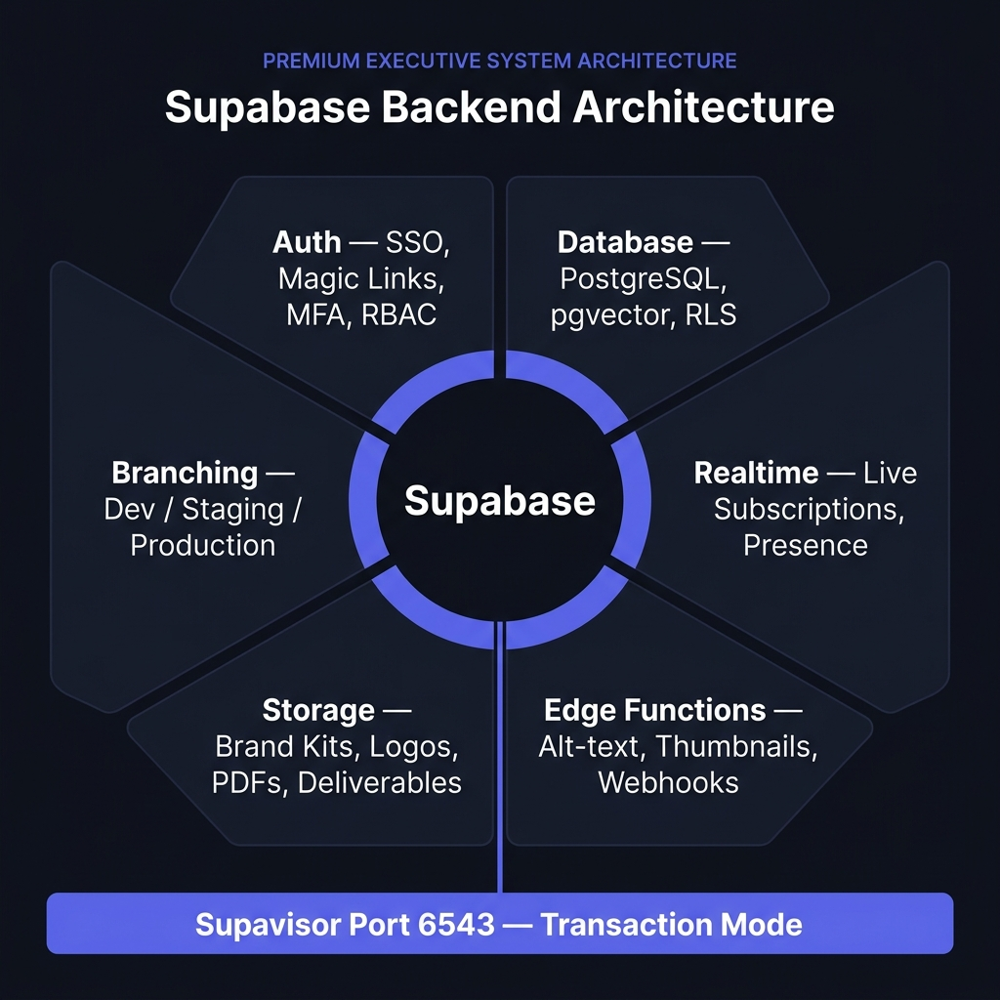
Figure 9: Supabase backend architecture — six core services with Supavisor transaction-mode connection pooling.
The most critical architectural decision regarding the database is connection management. The Next.js 16 backend must connect to Supabase via Port 6543, utilizing Transaction Mode through the Supavisor pooler [cite: 5]. (Confidence: High - Basis: Supabase best practices for high-concurrency environments).
If the application programming interface (API) connects via Port 5432 (Session Mode), Velyon will rapidly hit PostgreSQL's maximum direct connection limit (e.g., 20-50 connections depending on the compute tier). In a serverless environment, this results in catastrophic memory overload, blocked requests, and cascading server crashes [cite: 5]. Transaction Mode solves this by allowing hundreds of serverless Next.js functions to multiplex a small number of physical connections, instantly returning the "teller" (connection) to the pool the exact millisecond a query commits [cite: 5]. Session Mode (Port 5432) must be strictly reserved for specialized, stateful tasks, such as running administrative scripts or executing database migrations via CI/CD pipelines [cite: 5].
Indexing and Semantic Search Strategies
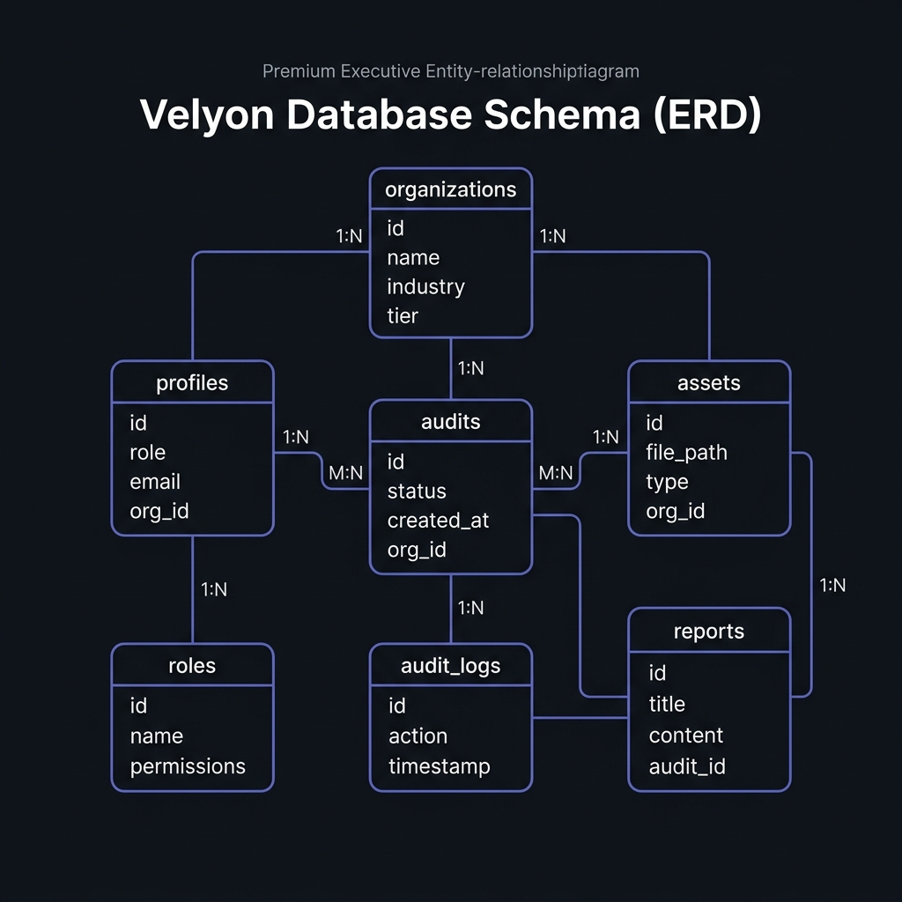
Figure 11: Velyon database entity-relationship diagram — seven core tables with RLS policies and pgvector semantic search.
As the platform accumulates thousands of client audits, basic SELECT queries will degrade in performance. The engineering team must implement comprehensive indexing strategies. Standard B-Tree indexes must be applied to all foreign keys (e.g., org_id, user_id) to accelerate table joins and RLS policy evaluations. For textual data, pg_trgm (trigram) indexes will be deployed to support fast partial-string matching across client names and report titles.
To enable advanced consulting capabilities, Velyon will leverage pgvector. When consultants need to query historical audit data conceptually—for instance, searching for "supply chain AI optimization strategies for retail"—traditional keyword search is inadequate. Instead, the text of all finalized audit reports will be processed through OpenAI's text-embedding-3-small model. The resulting high-dimensional vectors will be stored in dedicated vector columns within Supabase. This architecture permits sub-second cosine similarity searches across massive document repositories, allowing the AI agents to retrieve highly contextual historical recommendations to inform new audits [cite: 20].
Migrations, Backup, and Disaster Recovery
Database migrations will be managed strictly through code. Utilizing the Supabase CLI, schema changes are committed to version control and applied to the staging and production databases exclusively via GitHub Actions. Disaster recovery protocols dictate daily automated logical backups. However, to ensure rapid recovery times (RTO) in the event of catastrophic data corruption, Point-in-Time Recovery (PITR) must be enabled on the production cluster, allowing the database state to be restored to any specific second within the retention window.
7. DevOps & Deployment
The deployment pipeline bridges the gap between local development and the high-availability production environment. Velyon’s infrastructure will heavily leverage the Vercel ecosystem for frontend delivery, mapped directly to Supabase environments.
Deployment Pipelines and Environment Management
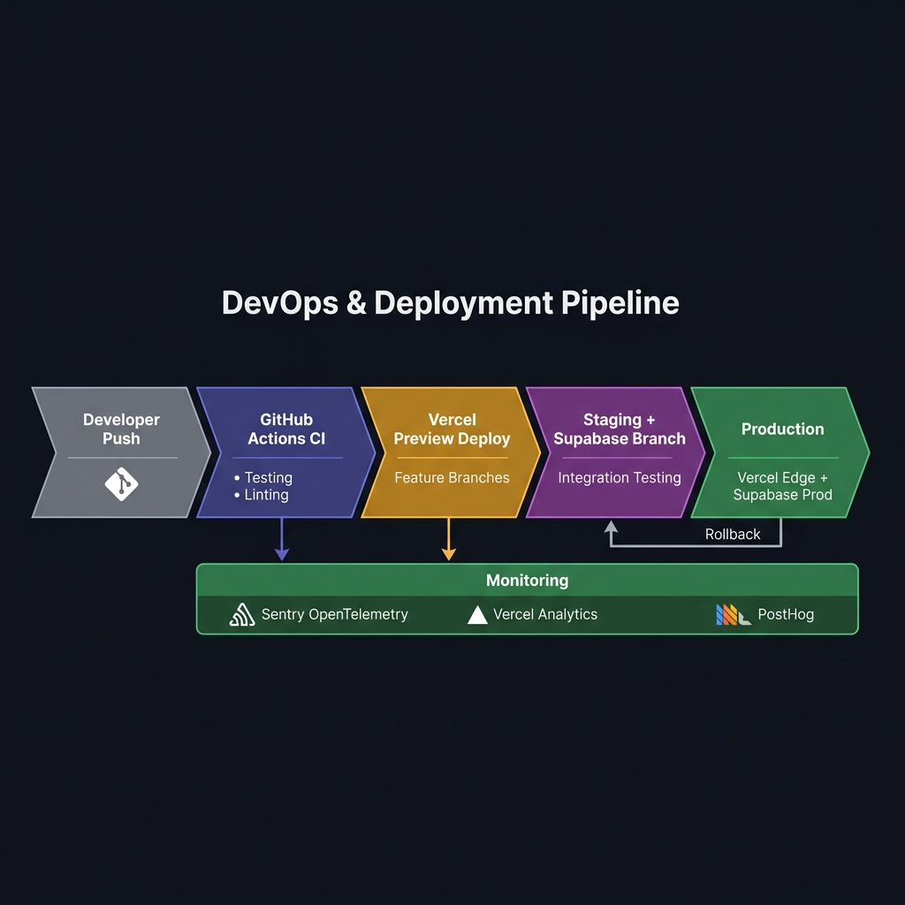
Figure 15: CI/CD deployment pipeline — from developer push through staging to production with Sentry, Vercel Analytics, and PostHog observability.
The Next.js 16 application will be deployed via Vercel's automated CI/CD pipeline. Environment management is strictly segregated into Development, Staging, and Production tiers. Each Vercel environment is paired with a distinct Supabase project (or Supabase Branch). When a developer pushes code to a feature branch, Vercel automatically generates a Preview Deployment, which connects to an isolated Supabase database branch seeded with sanitized test data. This guarantees that destructive schema changes or experimental AI features can be tested end-to-end without risking the production database.
Observability and Telemetry
In Next.js 16, Turbopack serves as the default bundler, offering dramatically faster compilation times via incremental function-level caching [cite: 30]. For production monitoring, Velyon will rely on Sentry. Sentry's Next.js SDK has been fundamentally overhauled for 2026 to natively consume Next.js's built-in OpenTelemetry instrumentation [cite: 31]. This architectural shift eliminates the need for heavy, proprietary build-time wrapping. The telemetry pipeline tracks requests seamlessly from the proxy.ts edge boundary, through the React Server Components, down to the final Supabase PostgreSQL query, providing a unified, full-stack trace for rapid debugging of performance bottlenecks [cite: 31].
AI Token Cost Optimization Strategies
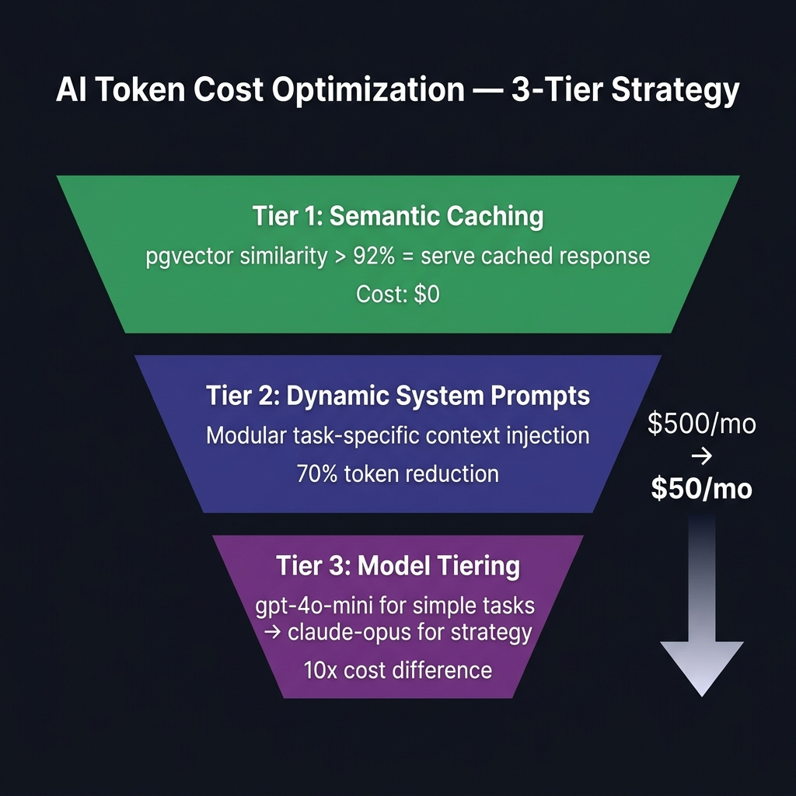
Figure 10: Three-tier AI cost optimization strategy — semantic caching, dynamic prompts, and model tiering reducing costs from $500/mo to $50/mo.
Without aggressive optimization, AI-heavy Next.js applications deployed on Vercel can suffer extreme cost overruns due to gigabyte-hour compute billing on long-streaming responses and massive token usage [cite: 12, 32]. (Confidence: High - Basis: 2026 developer cost analysis reports).
To reduce AI API token costs by an estimated 80-90% (from ~$500/month to ~$50/month per active heavy user), Velyon will implement a three-tiered cost mitigation strategy:
1. Semantic Caching: Implementing an embedding-similarity check using pgvector. If a user's prompt matches a previously generated response with a similarity threshold of > 92%, the system serves the cached response instantly, eliminating the external API call entirely [cite: 12].
2. Dynamic System Prompts: Abandoning bloated, 500-token universal system prompts in favor of modular, task-specific prompts that inject only the necessary context, yielding massive token savings per request [cite: 12].
3. Model Tiering: An intelligent routing classifier will direct tasks based on complexity. Simple data extraction or translation tasks are routed to gpt-4o-mini ($0.00015/1K tokens), while only deep architectural synthesis and strategic planning are granted access to premium models like claude-3-5-opus [cite: 12].
8. Security & Compliance
As a premium business consulting agency, Velyon handles highly sensitive corporate data, including proprietary business logic, CRM exports, and financial roadmaps. The security posture must exceed standard web application protocols.
Executing Untrusted Code (Vercel Sandbox)
During the AI audit process, the LLM agents may dynamically generate custom Python scripts to parse unique client CSV data or perform complex financial modeling. Executing this AI-generated code directly within the core Vercel serverless functions is a catastrophic security vulnerability, risking environment variable exposure and arbitrary code execution.
To mitigate this, Velyon must utilize Vercel Sandbox, generally available as of 2026. This service provisions ephemeral, isolated Firecracker microVMs running a secure Python 3.13 runtime. It safely executes untrusted code generated by AI agents. Because the Sandbox operates entirely outside the core infrastructure, the executing code is structurally blocked from accessing environment variables, database connections, or the wider Vercel network [cite: 10, 11, 33]. (Confidence: High - Basis: Vercel Sandbox technical specifications).
Application Security and OWASP Mitigation
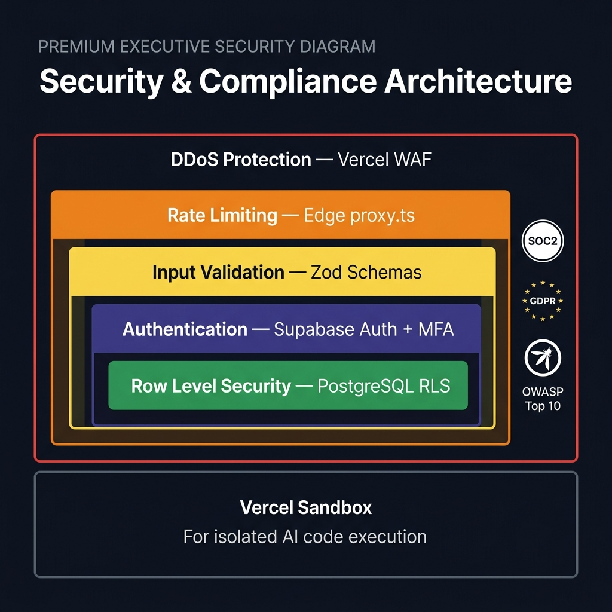
Figure 12: Defense-in-depth security architecture — five concentric layers from Vercel WAF to PostgreSQL RLS.
Standard web vulnerabilities must be addressed at the framework level. The Next.js application must implement strict Content Security Policy (CSP) headers to prevent Cross-Site Scripting (XSS) attacks. Cross-Origin Resource Sharing (CORS) configurations must tightly restrict API access to the approved Velyon domains. Furthermore, rigorous input validation is mandatory. All Next.js Server Actions and API endpoints must utilize Zod schemas to parse, sanitize, and validate incoming payloads, neutralizing SQL injection and malformed data attacks before they execute against the database [cite: 34]. Rate limiting will be enforced via the Vercel Web Application Firewall (WAF) to protect the authentication endpoints from brute-force attacks and mitigate Distributed Denial of Service (DDoS) threats.
SOC2 Readiness and GDPR Compliance
While Supabase provides SOC2 Type 2 compliance for its underlying infrastructure, Velyon must enforce application-level controls [cite: 35, 36]. This includes implementing database triggers to record all mutations to sensitive audits or organizations tables into an immutable audit_logs table, ensuring a complete cryptographic trail of data access [cite: 37].
GDPR compliance intersects awkwardly with database backups. While Article 17 (Right to Erasure) allows clients to mandate data deletion, manually scrubbing binary database dumps is technically unfeasible. The accepted 2026 compliance pattern is to establish and strictly document a backup retention window (e.g., 30 days) [cite: 38]. When a client deletes their data, it is expunged from the live database immediately. Within the documented 30-day window, the backups containing that historical data naturally expire and are overwritten. Indefinite backup retention without an automated erasure path is a severe GDPR vulnerability and must be avoided [cite: 38].
9. Testing Strategy
A robust, multi-layered testing strategy ensures the dashboard remains resilient across rapid iterative development cycles. The testing stack is divided into three distinct tiers to balance execution speed with environmental accuracy.
Unit and Integration Testing
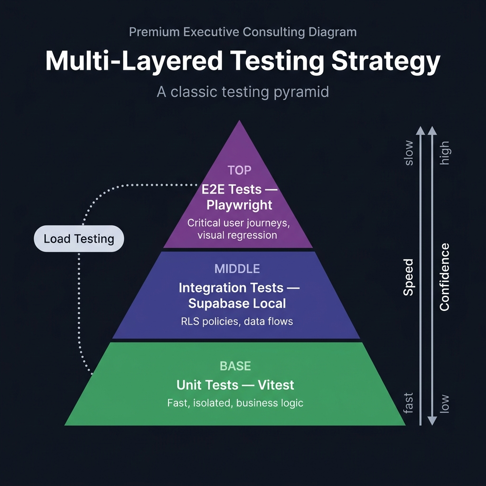
Figure 13: Multi-layered testing strategy — Vitest, Supabase Local, and Playwright across the testing pyramid.
For unit testing, Velyon will utilize Vitest. Because Next.js 16 React Server Components rely heavily on modern Node APIs, Vitest provides the fastest execution environment for validating pure business logic, such as the algorithms calculating ROI metrics from raw audit data.
Integration testing is critical for validating the complex Supabase configuration. Using the Supabase CLI (supabase start), the engineering team will automate the provisioning of local, Dockerized PostgreSQL instances. This allows developers to run comprehensive test suites against the Multi-Tenant RLS policies locally, ensuring data isolation rules are flawless before code is ever merged to the staging environment [cite: 39].
End-to-End and Performance Testing
End-to-End (E2E) testing will be managed by Playwright. Automated scripts will continuously verify critical user journeys across real browser engines. These flows include simulating a Consultant login, creating a new Client organization, uploading financial documentation, triggering an AI Audit generation, and finally logging in as the Client to review the generated dashboard. Visual regression testing will be integrated into the Playwright suite to ensure Tailwind CSS updates do not inadvertently break the premium UI layouts. Finally, load testing tools will be utilized to simulate high concurrent user access against the dashboard, validating that the Next.js caching strategy (use cache) holds up under sustained pressure without degrading Time-to-First-Byte performance.
10. Scalability & Architecture Patterns
As the Velyon platform scales to accommodate global enterprise clients, the overarching architecture must remain nimble while processing massive datasets.
The Modular Monolith Approach
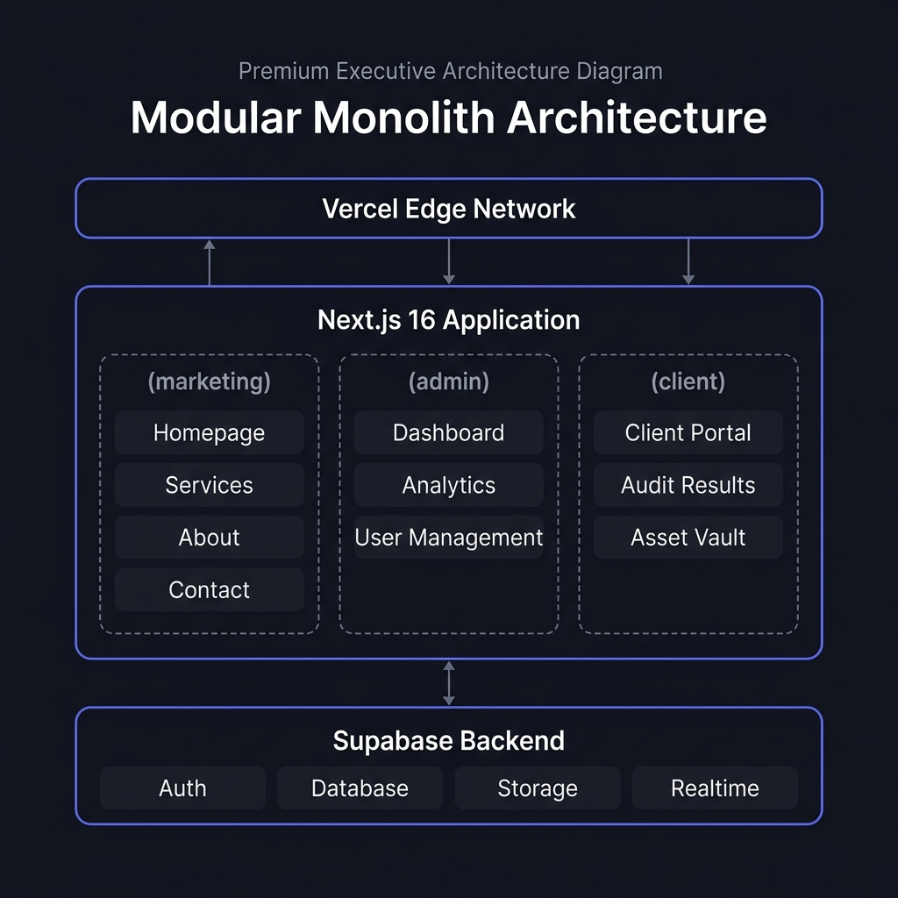
Figure 14: Modular monolith architecture — Next.js route groups provide logical separation within a single optimized deployment.
Given the complex nature of a business consulting platform, pursuing a distributed Micro-Frontend (MFE) architecture introduces unnecessary operational overhead and fragile deployment dependencies. Instead, Velyon will adopt a Modular Monolith architecture within Next.js 16. By leveraging Next.js Route Groups (e.g., structuring directories as (admin), (client), and (marketing)), the codebase is logically separated for developer velocity while continuing to compile into a single, highly optimized application that benefits from global Turbopack optimizations [cite: 40].
Background Processing and File Pipelines
The generation of premium consulting deliverables requires heavy file processing. When a client uploads gigabytes of raw data, the system cannot process this synchronously. Instead, the architecture utilizes an event-driven model. Supabase Storage triggers invoke background jobs that process PDFs, extract text via Optical Character Recognition (OCR), and optimize uploaded brand images.
Multi-Region and Global Caching
To serve a global clientele with minimal latency, the Velyon architecture relies heavily on Edge distribution. While the primary PostgreSQL database resides in a single geographic region to ensure strict ACID compliance and avoid the complexities of distributed consensus, the Next.js frontend is distributed globally via the Vercel Edge Network. The strategic use of the use cache directive, combined with Incremental Static Regeneration (ISR), ensures that finalized audit reports and marketing assets are cached physically close to the user. This architecture delivers instantaneous load times for the read-heavy client portal, while only routing latency-sensitive mutation requests back to the primary database region.
By anchoring the backend in Supabase's transaction-pooled Postgres and enforcing strict RLS at the database layer, Velyon guarantees enterprise-grade data isolation. Pairing this secure foundation with Next.js 16's explicit caching, Node-based proxy.ts routing, and durable execution via Vercel Sandboxes ensures that the Marketing Command Center will scale seamlessly, remain highly performant, and securely execute complex AI tasks for high-value clients well beyond 2026.
Sources: 1. medium.com 2. plainenglish.io 3. nextjs.org 4. dev.to 5. medium.com 6. supabase.com 7. dev.to 8. designrevision.com 9. Link 10. vercel.com 11. github.com 12. dev.to 13. dev.to 14. pkgpulse.com 15. vibeappscanner.com 16. vibe-eval.com 17. calendly.com 18. medium.com 19. kirillinoz.com 20. supabase.com 21. vibeappscanner.com 22. cybrosys.com 23. nextjs.org 24. webkul.com 25. nextjs.org 26. pkgpulse.com 27. medium.com 28. zeeg.me 29. resend.com 30. medium.com 31. sentry.io 32. truefoundry.com 33. vercel.com 34. medium.com 35. supabase.com 36. supabase.com 37. stacksync.com 38. simplebackups.com 39. youtube.com 40. metadesignsolutions.com
PART C — Synthesis & Implementation Roadmap
Supabase Migrations, RLS, and Seeding
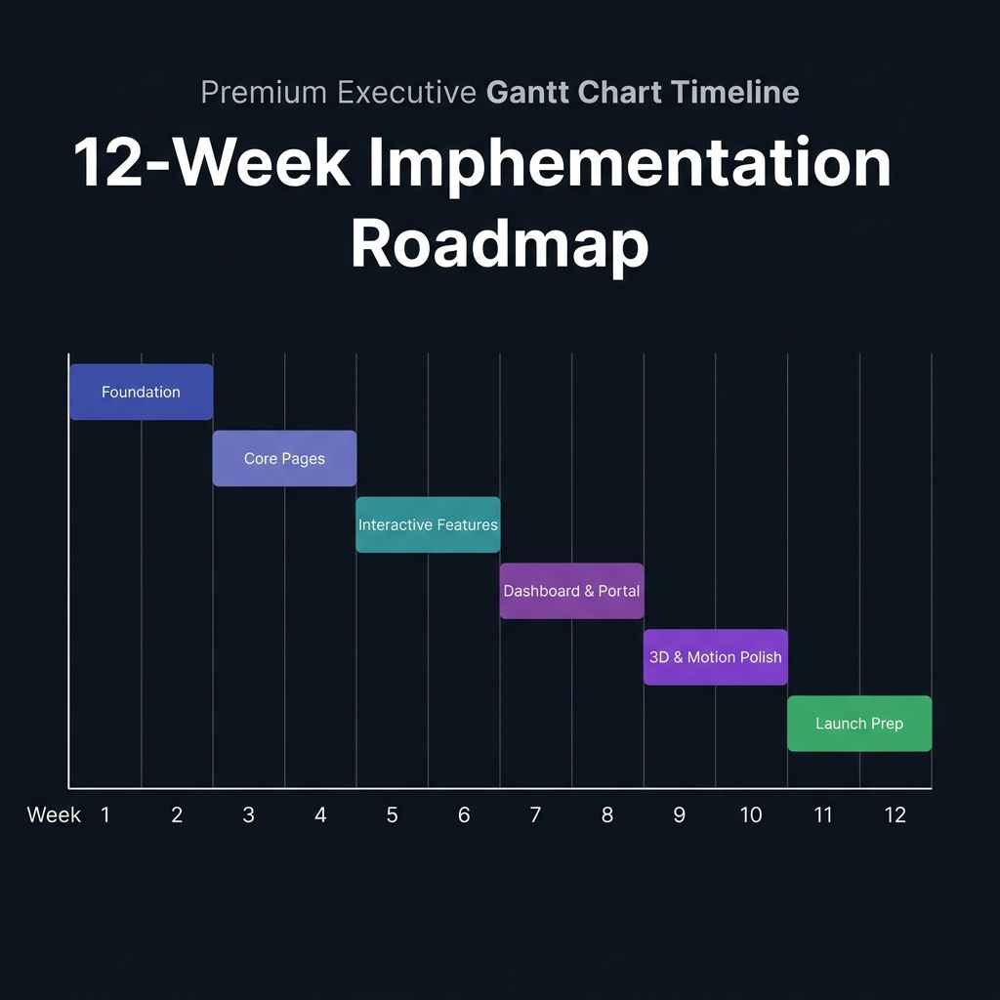
Figure 8: 12-week phased implementation roadmap — six sprints from Foundation through Launch Prep.
All database modifications must be managed via sequential SQL files in the supabase/migrations/ directory to ensure version control and reproducible environments [cite: 17].
Crucially, Row Level Security (RLS) is 'Default Deny' in Supabase. Upon table creation, no data is accessible. We must write explicit policies for SELECT, INSERT, UPDATE, and DELETE operations [cite: 16, 17, 18, 23]. To avoid the severe performance penalty of executing subqueries per row, policies will utilize the fast-path caching technique [cite: 16, 20]:
-- Migration file: 00003_rls_audits.sql
ALTER TABLE public.audits ENABLE ROW LEVEL SECURITY;
-- 2026 Optimized Pattern: auth.uid() is cached and reused, preventing slow sequential scans
CREATE POLICY "Clients read own audits"
ON public.audits
FOR SELECT
TO authenticated
USING (
client_id IN (
SELECT client_id FROM public.profiles WHERE id = (select auth.uid())
)
);
For development velocity, the supabase/seed.sql file will be populated with a robust set of synthetic data representing typical consulting scenarios. This allows the frontend team to immediately begin designing table views and charts without manually inputting test data, executed locally via the supabase db reset command.
7. Component Inventory
A strategic blend of bespoke components (for distinctive branding) and primitive components (for web accessibility compliance) is required. The architecture prioritizes shadcn/ui (powered by Radix UI) for unstyled, highly accessible primitives. Velyon's engineering team will then layer Tailwind CSS v4 and Framer Motion on top to achieve the required premium agency aesthetic [cite: 9, 10, 34, 35, 37].
Core Component Matrix
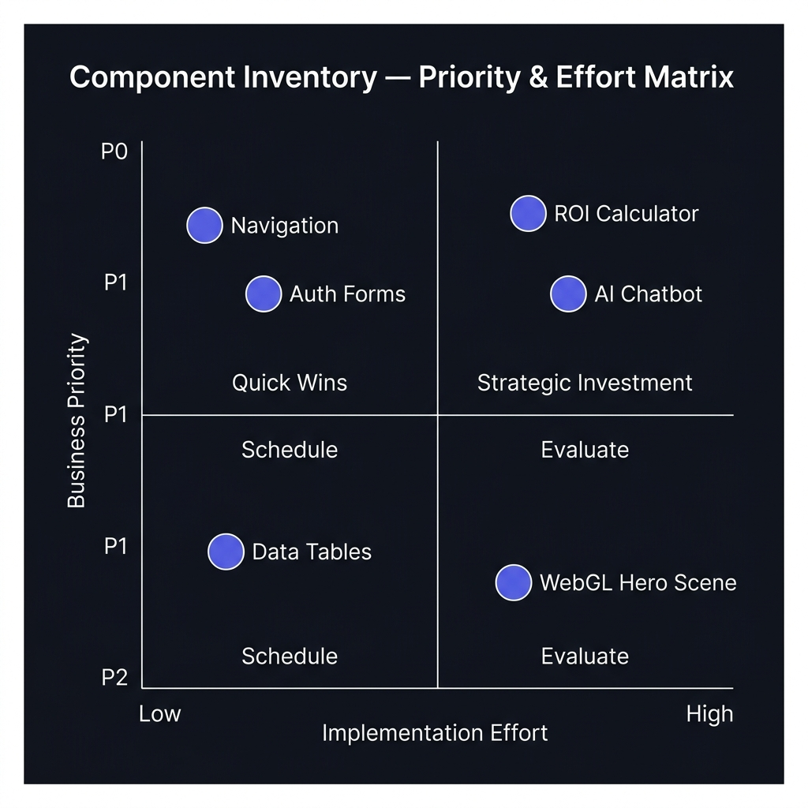
Figure 6: Component priority and effort matrix — strategic allocation of engineering resources across P0, P1, and P2 components.
| Component Name | Priority | Architecture | Construction Approach | Estimated Effort | Description |
|---|---|---|---|---|---|
| Global Navigation | P0 | Client | Custom + Framer Motion | Low | Sticky header with morphing layout animations for active link states. |
| ROI Calculator Tool | P0 | Client | Custom + React Hook Form | High | Complex interactive form with realtime visual chart updates representing financial efficiency metrics [cite: 44, 45, 46, 47]. |
| Audit Data Tables | P1 | Server | shadcn/ui (TanStack Table) | Medium | Displays complex AI audit logs and tool recommendations. Built strictly as highly cacheable server components [cite: 54, 55]. |
| Authentication Forms | P1 | Client | shadcn/ui + Zod | Low | Standardized login, register, and forgot password flows featuring strict client-side validation [cite: 37]. |
| AI Advisory Chatbot | P2 | Client | Custom + Vercel AI SDK | High | A floating action button revealing a streaming chat interface that securely queries RAG documents generated during audits. |
| WebGL Hero Scene | P2 | Client | React Three Fiber | High | Interactive 3D particle system. Must be loaded via <Suspense> to protect initial INP and LCP scores [cite: 2, 4, 56]. |
Component Dependency Graph and Type Definitions
The component architecture flows from foundational primitives up to complex orchestrators. For example, the ROIChartWidget (Organism) depends on multiple FormField components (Molecules), which in turn depend on base Input and Label components (Atoms).
Strict TypeScript interfaces define the boundaries between these components, ensuring type safety when data crosses the server-to-client boundary.
// src/features/roi-calculator/types.ts
export interface ROICalculatorProps {
initialBaselineCosts: number;
industryMultiplier: 'finance' | 'healthcare' | 'ecommerce' | 'manufacturing';
automationPotentialPercentage: number;
onCalculateComplete?: (result: {
netAnnualValue: number;
paybackPeriodMonths: number;
projectedROIPercentage: number;
}) => void;
}
8. Performance Budget
To rank optimally on search engines and convert premium enterprise clients in 2026, the application must conquer the stringent Core Web Vitals (CWV) targets: LCP < 2.5s, INP < 200ms, and CLS < 0.1 [cite: 1, 2, 24, 57, 58]. For an agency utilizing WebGL and complex Framer Motion transitions, Interaction to Next Paint (INP) poses the highest risk of failure [cite: 2, 4, 24].
Strict Budgeting & Technical Execution
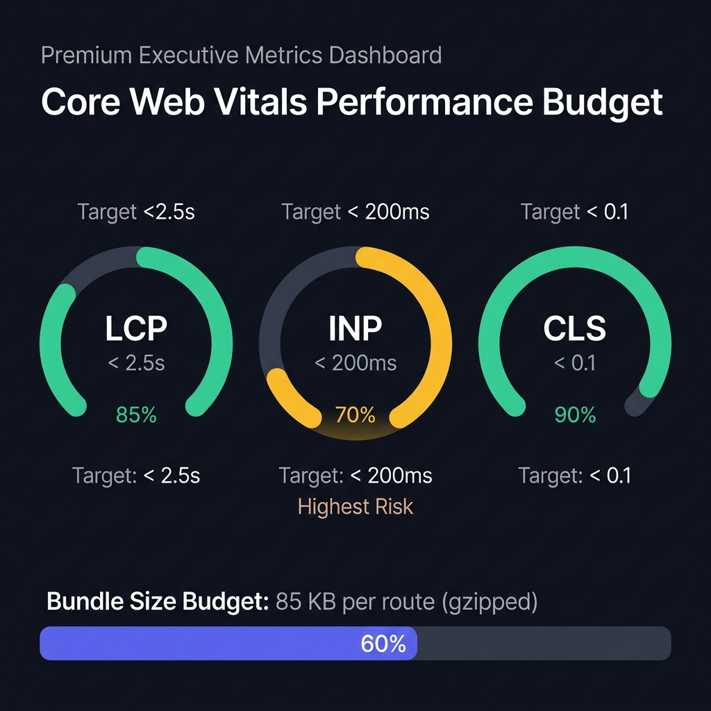
Figure 7: Core Web Vitals performance budget — LCP < 2.5s, INP < 200ms, CLS < 0.1, with 85KB gzipped bundle limit per route.
- LCP Strategy (Largest Contentful Paint): Hero images and core typography entirely dictate this metric. We will utilize Next.js
next/font/localto host the brand fonts directly on the Vercel edge network, enforcingfont-display: swapto prevent invisible text [cite: 2, 10, 57]. The entire hero section will be rendered as a Server Component, delivering raw HTML instantly via edge caching, bypassing client hydration entirely [cite: 5, 6, 7]. - INP Strategy (Interaction to Next Paint): To pass the 200ms threshold, the browser's main thread must remain unblocked. Heavy JavaScript tasks—such as the complex mathematical operations driving the ROI calculator—must be yielded using
setTimeoutor executed in Web Workers. We will strictly defer the loading of all third-party scripts (e.g., PostHog analytics, HubSpot forms) using the Next.js<Script>component set tostrategy="lazyOnload"[cite: 2, 24]. - CLS Strategy (Cumulative Layout Shift): Every image, iframe, and dynamic container will be assigned explicit width and height attributes or CSS aspect ratios. Suspense boundaries will utilize exact-dimension
<Skeleton />components as fallbacks. This ensures that when asynchronous data resolves from Supabase, the incoming DOM elements do not force the page layout to shift [cite: 2, 4, 14, 24, 57]. - Bundle Size Budget: No individual client route is permitted to exceed 85 KB (gzipped) of JavaScript. Server components will handle all heavy dependencies (such as date parsing libraries like
date-fnsor markdown compilers), ensuring absolutely zero JavaScript penalty is passed to the client's browser [cite: 4, 7, 14].
9. SEO & Marketing Technical Requirements
The platform must serve as a high-converting lead generation engine. Beyond aesthetics, the marketing pages require deep, structural technical SEO integration to capture high-intent B2B search traffic [cite: 1, 34, 57, 59].
- Metadata Strategy: Next.js 16 provides the powerful
generateMetadataAPI. Every route in thesrc/app/(marketing)group will dynamically construct itstitle,description, andopenGraphdata, ensuring absolute relevance to the specific consulting service being viewed [cite: 60]. - Structured Data (JSON-LD): We will programmatically inject
application/ld+jsonscripts into the<head>of relevant pages. The Homepage will featureOrganizationmarkup; the ROI Calculator will featureSoftwareApplicationmarkup; the Services page will featureServiceandFAQmarkup. This semantic structuring is critical to capture rich snippets in AI-driven search results (like Google's SGE) [cite: 32, 60]. - Sitemap & Robots Configuration: The
sitemap.tsfile will dynamically query the PostgreSQL database to generate URLs for all published AI case studies, outputting a valid XML sitemap [cite: 10, 51]. Therobots.txtfile will be configured to encourage crawling on all(marketing)routes but will strictly block all paths under/dashboardor/apito protect application state. - Analytics and Conversion Tracking: PostHog will be deployed over traditional Google Analytics 4. PostHog provides superior event tracking, automatic session replays, and feature flags. This is critical for A/B testing the onboarding flows and isolating friction points within the ROI calculator's conversion funnel [cite: 37].
10. Launch Checklist
A rigorous pre-flight checklist is the final barrier preventing catastrophic production failures, particularly concerning Supabase data exposure and Vercel edge configuration misalignments [cite: 4, 22, 38, 48]. The following verification items must be cleared before the DNS switch.
Category A: Security & Database Infrastructure
- RLS Audit: Execute queries using the
anonkey in the Supabase SQL editor. Ensure zero rows are returned onclients,audits, andprojectstables [cite: 17, 18, 23]. - Environment Variables: Verify
.env.productioncontainsNEXT_PUBLIC_SUPABASE_URLand theanonkey. Ensure theSUPABASE_SERVICE_ROLE_KEYis completely absent from client-accessible files [cite: 17, 38, 51]. - Proxy.ts Configuration: Ensure the Next.js
proxy.ts(which replaced legacy middleware) correctly intercepts all requests to/dashboard/*and cryptographically verifies the Supabase session token [cite: 3, 6, 22]. - CORS Configuration: Verify that Supabase API settings restrict incoming requests solely to the Velyon production domain.
- Database Indexing: Confirm B-tree indexes are applied to all foreign keys and frequently queried fields (e.g.,
user_id,client_id) to prevent sequential scans [cite: 19, 23, 61]. - Audit Logs Active: Ensure native PostgreSQL triggers are successfully writing mutation events to the
audit_logstable [cite: 17, 39, 62]. - Connection Pooling: Verify PgBouncer is active and Next.js is connecting via the pooled transaction URL (port 6543) rather than the direct session URL [cite: 19, 20].
- Rate Limiting: Confirm edge functions and authentication endpoints have strict rate limiting applied to mitigate brute-force attacks [cite: 17, 18].
- Secret Rotation Plan: Establish and document the 90-day rotation schedule for third-party API keys (Resend, PostHog).
- Backup Verification: Perform a manual trigger of Supabase Point-in-Time Recovery (PITR) to ensure data restoration procedures are functional [cite: 17].
Category B: Frontend Performance & CWV
- Turbopack Build Optimization: Run
next buildand verify that all(marketing)pages compile as static HTML (indicated by a solid circleâ—‹in the build output) [cite: 5, 6, 7, 27, 31]. - Lighthouse CWV Test: Execute Lighthouse on a throttled 4G connection. Validate LCP < 2.5s, INP < 200ms, and CLS < 0.1 [cite: 1, 2, 4, 24].
- Bundle Size Verification: Analyze the
.next/analyzeoutput. Confirm no individual client route exceeds the 85 KB JavaScript budget. - Image Format Optimization: Verify all Next.js
<Image>components are successfully serving modern WebP or AVIF formats. - Font Preloading: Confirm
next/fontis successfully injecting preload tags for the critical brand fonts in the document head [cite: 2, 57]. - Third-Party Script Deferral: Check the network tab to ensure PostHog and Stripe scripts load only after the main thread is idle [cite: 2, 24].
- Animation Performance: Monitor frames per second (FPS) while navigating pages with Framer Motion transitions; ensure a steady 60 FPS without dropping frames.
- 3D Canvas Lazy Loading: Confirm the React Three Fiber canvas only initializes when it enters the viewport or is explicitly requested.
- Cache Hit Ratio: Monitor Vercel logs to ensure explicit
"use cache"directives are registering high cache hit ratios for static audit report templates [cite: 3, 4, 6]. - CSS Payload: Verify Tailwind v4 generates a minimized CSS file under 15KB by relying on the automated content detection system [cite: 10, 26].
Category C: UX & Accessibility (A11y)
- Keyboard Navigation: Traverse the entire marketing site and client dashboard using only the Tab key. Ensure visible focus rings on all interactive elements.
- Screen Reader Compatibility: Test the ROI Calculator and Audit Data Tables using VoiceOver or NVDA to ensure ARIA labels announce dynamic state changes.
- Color Contrast: Verify all OKLCH text/background combinations meet or exceed WCAG AA standards (4.5:1 ratio) in both light and dark modes [cite: 12, 13].
- Form Error Handling: Confirm that invalid inputs in the authentication and ROI calculator forms return immediate, descriptive error messages via Zod validation [cite: 37].
- Responsive Fluidity: Resize the viewport from 320px to 2560px. Ensure CSS
clamp()functions prevent horizontal scrolling or awkward whitespace [cite: 8, 41]. - Touch Targets: Verify all buttons and links on mobile breakpoints possess a minimum touch target size of 44x44 pixels.
- Dark Mode Toggle: Confirm the theme switcher updates the
data-themeattribute instantly without causing hydration mismatch errors [cite: 10, 63]. - Empty States: Review the dashboard when a client has zero projects or audits. Ensure welcoming empty states guide the user toward the next action [cite: 37].
- Loading Skeletons: Confirm that
<Suspense>fallbacks accurately mirror the dimensions of the incoming data to prevent CLS [cite: 2, 14, 57]. - Toast Notifications: Verify success and error states (e.g., "Report Downloaded", "Save Failed") trigger accessible, auto-dismissing toast notifications.
Category D: SEO & Marketing Operations
- Dynamic Metadata Check: Inspect the DOM on individual service pages to ensure Open Graph tags (
og:image,og:title,twitter:card) are properly rendering [cite: 51, 60]. - JSON-LD Validation: Run the homepage and specific service pages through the Google Rich Results Test to confirm structured data is error-free [cite: 32, 60].
- Sitemap Verification: Access
/sitemap.xmlin the browser. Confirm it lists all canonical URLs and excludes any/apior/dashboardpaths [cite: 10, 51]. - Robots.txt Configuration: Verify
/robots.txtaccurately points to the sitemap and blocks restricted directories. - Canonical Tags: Ensure every public-facing page implements a self-referencing canonical tag to prevent duplicate content penalties.
- PostHog Event Tracking: Complete a test signup flow and verify that
signup_completedandroi_calculatedevents successfully register in the PostHog dashboard [cite: 37]. - Email Deliverability Setup: Confirm TXT, SPF, and DKIM records are verified for the custom domain in Resend to ensure system emails avoid spam folders [cite: 38].
- 404 Page Design: Review the custom
not-found.tsxpage to ensure it matches brand guidelines and offers clear navigation back to the homepage. - 301 Redirects: If migrating from an old domain, ensure
next.config.jsis populated with permanent redirects to preserve existing SEO equity. - Favicon & App Icons: Verify all necessary high-resolution favicons and Apple Touch Icons are present in the
public/directory [cite: 51].
Category E: Deployment & Operations
- DNS Propagation: Confirm A and CNAME records correctly point to Vercel production edge servers [cite: 38].
- SSL Certificate: Verify Vercel has successfully provisioned and attached the Let's Encrypt SSL certificate.
- Security Headers: Check that
next.config.jsapplies standard security headers (Strict-Transport-Security,X-Content-Type-Options,X-Frame-Options) [cite: 17]. - Vercel Build Environment: Ensure the Node.js version in Vercel settings matches the
enginesfield inpackage.json(Node 20+ required for Next.js 16). - Stripe Webhooks (If applicable): Confirm production Stripe webhooks are pointing to the correct Velyon API endpoint with the correct signing secret [cite: 37, 38].
- Error Tracking: Verify an exception monitoring service (e.g., Sentry) is actively capturing client and server-side errors.
- Log Drains: Ensure Vercel and Supabase logs are streaming to a centralized logging platform for post-incident analysis [cite: 17, 39].
- Uptime Monitoring: Configure synthetic monitoring tools (e.g., Better Stack) to ping the homepage and a critical API endpoint every minute.
- Rollback Plan Documented: Ensure the engineering team has documented the exact CLI commands required to instantly revert a Vercel deployment and rollback a Supabase schema migration [cite: 17].
- Final Stakeholder Sign-off: Obtain explicit written approval from the Creative Director and Lead Fullstack Engineer.
By strictly adhering to this comprehensive implementation roadmap and pre-launch verification, Velyon will successfully launch a digital platform that is not merely aesthetically superior, but technically elite. The orchestration of Next.js 16's server-first streaming, Tailwind v4's OKLCH native scaling, and Supabase's impenetrable Row Level Security creates a 2026-grade enterprise architecture that is highly secure, infinitely scalable, and blindingly fast.
Sources: 1. kerkarmedia.com 2. medium.com 3. makerkit.dev 4. mtouchlabs.com 5. medium.com 6. nextjs.org 7. dev.to 8. tailwindcss.com 9. mintlify.app 10. designrevision.com 11. trypeek.app 12. dev.to 13. medium.com 14. hambardzumian.com 15. textify.ai 16. makerkit.dev 17. leanware.co 18. vibe-eval.com 19. explainx.ai 20. tinybeans.net 21. makerkit.dev 22. rootinfosol.com 23. eastondev.com 24. digitalapplied.com 25. tailkits.com 26. digitalapplied.com 27. dev.to 28. dev.to 29. medium.com 30. medium.com 31. tailwindcss.com 32. maviklabs.com 33. medium.com 34. thefrontkit.com 35. reddit.com 36. robinbuilds.dev 37. skene.ai 38. makerkit.dev 39. reddit.com 40. medium.com 41. logrocket.com 42. tailwindthememaker.com 43. supernova.io 44. gsconsultingllc.com 45. proxima.gr 46. thinking.inc 47. holmesconsultants.com 48. iloveblogs.blog 49. dharmsy.com 50. dev.to 51. nextjs.org 52. postgres.ai 53. supabase.com 54. reddit.com 55. nema.gov.mn 56. utsubo.com 57. seoscore.tools 58. meteoraweb.com 59. digitalapplied.com 60. ganeshtidake.site 61. dreambase.com 62. medium.com 63. stackoverflow.com